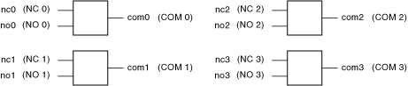

The following figure represents the NI PXI-2548 in the quad SPDT general-purpose topology.
|  |
|
Call the niSwitch Connect Channels VI or the niSwitch_Connect function to connect channels in this topology. If applicable, you must call the niSwitch Disconnect Channels VI or the niSwitch_Disconnect function to disconnect an existing connection before you call the niSwitch Connect Channels VI or the niSwitch_Connect function.
 |
Note The niSwitch Disconnect Channels VI or the niSwitch_Disconnect function does not operate the relay until the next niSwitch Connect Channels VI or the next niSwitch_Connect function is executed. Thus, one channel is always connected to each common channel. If you have reset the module or called the niSwitch Disconnect All Channels VI or the niSwitch_DisconnectAll function, you do not need to disconnect the default channel (NCx) from COMx upon initial connection. |
The following sequence of tasks illustrates the VI/function calls necessary to make consecutive connections—one between NO 1 and COM1 and the other between NC 1 and COM1:
When scanning the NI PXI-2548, a typical scan list entry might be no1->com1;. This entry routes the signal connected to NO 1 to COM 1.